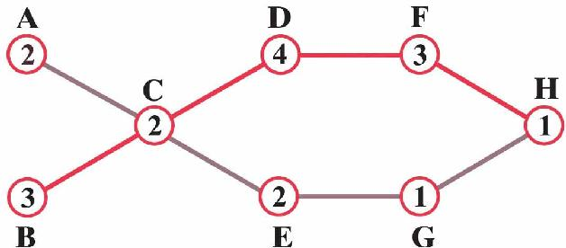
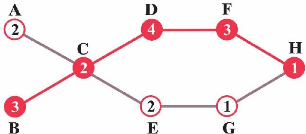

“迪杰斯特拉算法是求最短路径，什么时候需要求最长路径呢？”小文问。
“求起点到终点的最长路径也是图论中一个比较经典的问题。”
“真的吗，是用于慢递服务吗？哈哈。”
“先不说慢递的事，我们先看这个例子。”妈妈在纸上画下一张图。
“这是什么？”

“假如我们家搞装修，这是装修的一个简化的工序图，装修从左边开始到H点结束，字母所标示的点表示其中需要的若干工序，比如水电、泥工、木工等。”
“数字是干什么的？”
“这也是带权图，数字表示完成各个工序预计的天数。完成A工序需要2天，B工序需要3天，C工序需要2天，如此等等。”
“明白了。”
“要注意，工序C必须等工序A和B完成后才能开工。问你一个问题，你看接手工序C的人第几天可以开工呢？”
“虽然工序A只要2天就完成了，但C还是要等B完成后才能开始，所以接手C工序的人需要3天以后才能开工，对吗？”
“正确！C工序3天后可以开工，由于C工序本身需要2天，所以C工序5天后可以完成。C工序完成了，后续的D、E工序可以开始，你看D、F、E、G完成时间是什么时候？”
“如果C工序5天后完成，那么D工序9天后可以完成，F工序12天后可以完成；E工序7天后可以完成，G工序8天后可以完成，对不对？”
“很好，继续，最后H工序的完成时间呢？”
“看起来，D、F工序花费时间多，E、G工序花费时间少，H工序必须要在D、F完成后才能开始，所以H应该是12天后可以开始，加上自己本身需要1天，所以13天后工序H可以完成——不过你刚才不是说找最长的路径吗，这跟那有什么关系？”
“你找找从起点到终点最长的路径是哪条？”
“让我看看，路径BCDFH的数字加起来是13，算了下，其他路径的权值都比这个小，BCDFH应该是从起点到终点的一条最长的路径。”
“对的，这条最长的路径决定了整个工程的预计完成时间是13天，在这条最长的路径上，比方说，工序D完成时间原本是4天，如果因为干活的人生病了导致推迟完成一天，那么整个工程完成的时间也会增加一天，变成14天。”
“这样说来，如果这条路径上某道工序提前完成一天，整个工程的完成时间就会缩短一天。”
“非常正确，也就是说BCDFH这条路径上的每一步是否如期完成决定了整个工程的周期，因此，这样的路径就叫作关键路径，它是一条从起点到终点权值最长的路径。而对于不在关键路径上的工序，比如A、E、G，相对而言则不会对整个工程产生这样的重要影响。”

BCDFH是关键路径（是图中权值最长的一条路径）
“我有点明白了，换句话说，不在关键路径工序上工作的人，哪怕出去闲逛了一两天也可能不会对工期产生影响？”
“嗯，就这个例子而言，你要明白，如果以A工序为例，A工序上的人可以推迟一天完成，推迟时间超过一天是不行的哦。明白了这个道理，你再看看讲义中下面的例子。”